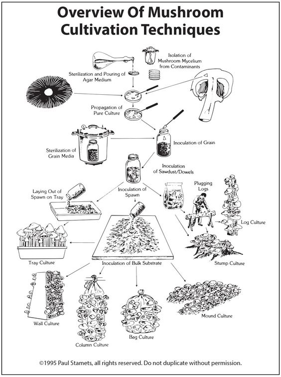
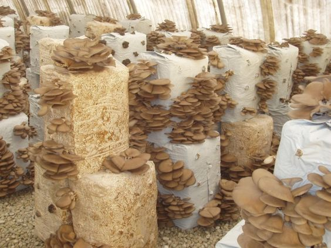
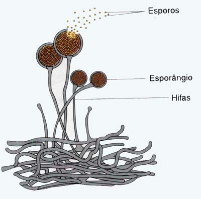

Existem diferentes tipos de cultivos de fungos, que são realizados para diversos propósitos, incluindo alimentação, produção de medicamentos, pesquisa e estudo dos fungos. Aqui estão alguns dos principais tipos de cultivos de fungos:
 O cultivo de cogumelos comestíveis é uma prática antiga e amplamente difundida. Espécies populares, como o cogumelo Agaricus bisporus (champignon), shiitake, cogumelo do sol (Pleurotus spp.) e cogumelo portobello, são cultivadas em ambientes controlados, como salas de cultivo ou estufas, em substratos específicos, como serragem, palha, resíduos agrícolas ou compostagem.
Outros fungos são cultivados para a produção de alimentos fermentados, como o fermento Saccharomyces cerevisiae para a produção de pão, cerveja e vinho. Outros exemplos incluem a fermentação de soja para produção de molhos como o miso e o shoyu, além da fermentação de queijos, como o queijo Roquefort, que utiliza o fungo Penicillium roqueforti.
Além dos cogumelos comestíveis, há uma variedade de cogumelos cultivados por suas propriedades medicinais. Por exemplo, o cogumelo reishi (Ganoderma lucidum) é valorizado por suas supostas propriedades imunoestimulantes, enquanto o cogumelo do chaga (Inonotus obliquus) é cultivado para a produção de extratos utilizados em suplementos de saúde.
 E também há certos fungos filamentosos, como Aspergillus e Trichoderma, que são cultivados para a produção de enzimas industriais, como amilases, celulases e proteases. Essas enzimas são utilizadas em várias indústrias, incluindo alimentos, agricultura, têxteis e biocombustíveis.
Fungos também são cultivados em laboratório para fins de pesquisa, estudo e diagnóstico. Isso envolve o cultivo em meios de cultura adequados, como ágar, para estudar características morfológicas, fisiológicas e genéticas dos fungos, bem como para realizar testes de sensibilidade a medicamentos antifúngicos.
É importante notar que o cultivo de fungos requer condições específicas de temperatura, umidade, pH e nutrientes, além de medidas adequadas de controle sanitário. Os métodos de cultivo podem variar dependendo do tipo de fungo e do propósito do cultivo.
 Os esporos são as estruturas reprodutivas dos fungos, que lhes permitem se espalhar e colonizar novos ambientes, ainda assim estes também servem para fazer cultivos de alguns fungis especificos. Eles podem ser encontrados em várias formas, como ascosporos, basidiósporos, conídios, zoósporos e clamidósporos, dependendo do grupo taxonômico do fungo.
Os esporos são leves e podem ser transportados pelo ar, água, animais e outros meios. Quando encontram condições adequadas de umidade, temperatura e nutrientes, os esporos podem germinar e dar origem a novos micélios, estruturas vegetativas dos fungos.
Os esporos podem ser fontes de contaminação em ambientes internos, como casas ou edifícios, onde podem proliferar em condições de umidade excessiva e falta de ventilação adequada. A exposição a esporos de fungos pode causar alergias respiratórias e outros problemas de saúde, especialmente em pessoas sensíveis.
É importante destacar que a manipulação de esporos de fungos pode representar riscos à saúde, principalmente em laboratórios ou ambientes onde ocorrem atividades específicas, como estudos microbiológicos ou manipulação de fungos patogênicos. Precauções adequadas devem ser tomadas ao lidar com esporos para evitar exposição e contaminação.